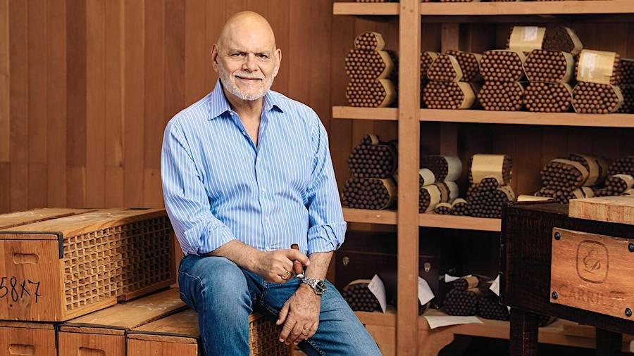
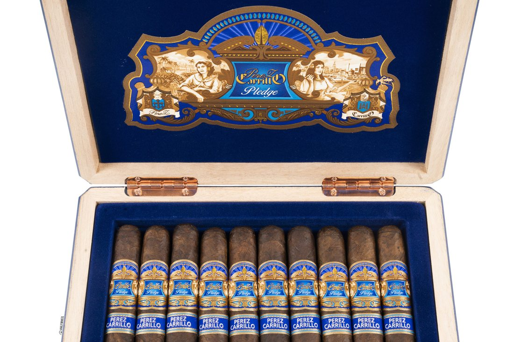
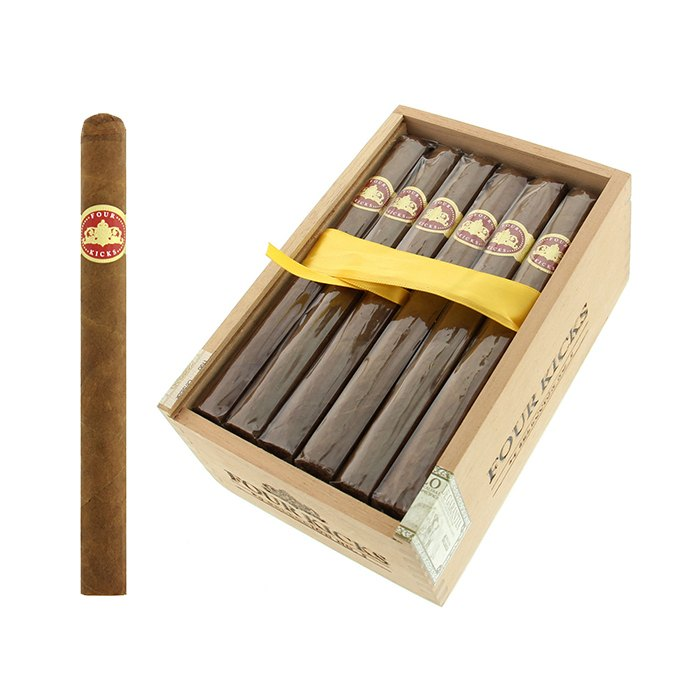
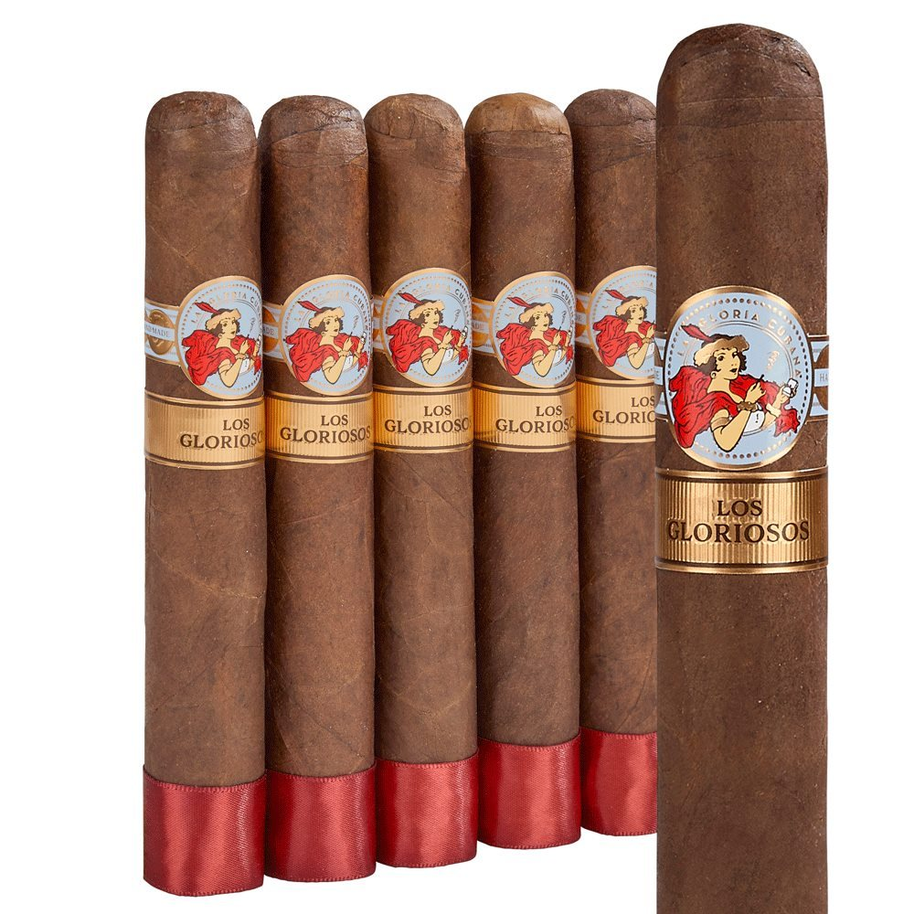
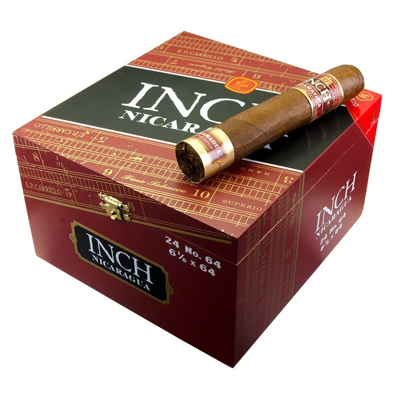
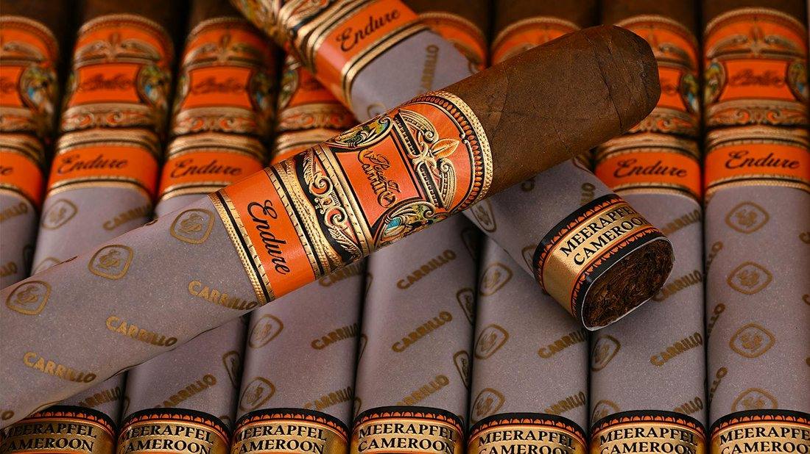
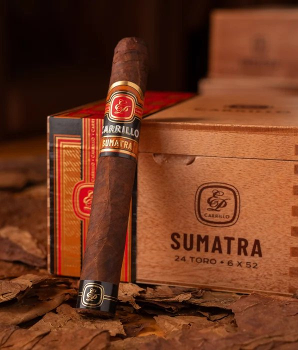

Feature — E.P. Carrillo
In the previous installment, "Crowned Heads," there was a man who stood behind the young rebels as the master to whom they entrusted their manufacture. Their debut line, Four Kicks, was made at his factory, Tabacalera La Alianza in the Dominican Republic. The protagonist of this feature is that man: Ernesto Pérez-Carrillo.
In the industry he is called the "Godfather of Boutique Cigars." Born the son of a Cuban senator, he was carried into exile in Miami by the revolution. At 25 he went to New York dreaming of becoming a professional jazz drummer; the dream broke, and he returned to the family business — and at the height of the cigar boom of the 1990s he pushed his own brand, La Gloria Cubana (the U.S. version), into a nationwide sensation. But in 1999 he sold that kingdom. He stayed on and worked ten more years, left at 57, and founded a company bearing his own name together with his children — and in his sixties he twice seized Cigar Aficionado's No. 1 of the year. Then, in 2025, the brand he had sold called on him once again.

This feature traces the senator father and the exile; the drummer's dream that never came true; the scene of the boom, when 26,000 orders arrived in a single day; the sale and the ten years he stayed; the fresh start at 57; the trilogy that engraved his family's names; and on to the "third handshake." It took half a century to stand at the summit the first time. To stand there again took another quarter-century.
The facts in this feature are limited to what we could corroborate through the specialist and trade press (Halfwheel, Cigar Aficionado, Cigar Journal, Cigar Coop, SmokingPipes, Cigar World, Vitola), the brand's official site (Casa Carrillo), and the principals' own interview statements. For items where published accounts have varied over the years — such as his birth year and the year of the sale — we adopt the conclusion confirmed by collation with primary sources, and we touch on the origin of the discrepancies as well. No anecdote we could not back up is used. Also, the La Gloria Cubana appearing in this feature refers, unless otherwise noted, to the Pérez-Carrillo family's U.S. brand. It is a different cigar from Cuba's brand of the same name (Habanos) — see the fact-check box in Chapter 3. U.S. prices are the published prices of the time.
◆ Chapter 1 — The Senator's Son: From Cuba to Miami
Ernesto Pérez-Carrillo Jr. was born in November 1951 in Pinar del Río, the tobacco-growing region of western Cuba. His father, Ernesto Sr., was a man who had worked as a tobacco buyer for the American leaf-buying company Cuban Land & Leaf Tobacco. In 1948 he bought the small Havana factory El Credito, and then advanced into politics, winning election to the Cuban Senate in 1954 and 1958. His constituency was Pinar del Río. So the son himself later told Cigar Aficionado in an interview.
In 1959 the revolution changed the family's fate. The father was driven out, and the family crossed over to Miami. In the memory of the boy Ernesto there remained fighter planes crossing the sky and tanks in the streets. At first, it is said, his father kept the household going by running a bar and the like. But he did not abandon the tobacco trade. In 1968 he opened El Credito Cigar on Calle Ocho, the main street of Little Havana, and in 1972 he began the U.S. version of La Gloria Cubana. The trademark was one his father registered, named for a factory of the same name that had stood in the neighborhood in the Cuba days.
What the father left behind was the vessel: the factory and the brand. But its contents — the blend — were remade on the son's side. Although, before that son threw himself into the family business, a detour was necessary.
◆ Chapter 2 — The Drummer's Dream: The 25-Year-Old Who Put Down the Sticks
The young Ernesto's passion lay not in cigars but in jazz. He married at 19, and while helping at his father's factory he played drums as a side job — so he himself tells it. "I got married at nineteen, so I had a side job. Playing music. I was a drummer." The drummers who influenced him were Tony Williams and Buddy Rich. The drums were not a hobby; they were one of the jobs that supported the household.
At 25, he set out for New York, seriously aiming to become a professional. He moved from audition to gig to audition, and even auditioned for the drummer's chair in the orchestra of Stan Getz, the saxophonist he admired. But the chair could not be grasped, and he returned to Miami. His own words remain: "For me, Miami was supposed to be a stepping stone — before succeeding as a jazz musician in New York." The city that was meant to be a stepping stone became his main stage.
The turning point is said to have come in 1976, when his father was about to let El Credito go. He came to work at the factory alongside his father, and on April 8, 1980, upon his father's death, he took over the factory at 29. On the boxes, it is said, he revived the original artwork from the Cuba days. And of the starting point of his life in cigars he still says this: "I have lived fifty-four years in this work already. For fifty-four more years, I want to keep doing the same thing. This is a wonderful job."
The drums live on in the words of his blending philosophy as well. In an interview with the cigar trade house SmokingPipes, he said: "When I was a musician, I practiced six to seven hours a day. Making cigars is the same — I am always 'practicing' at blending. To ears grown used to 4/4 time or 3/4 time, let 5/4 or 7/4 arrive, and the rhythm of the music changes completely. Cigars are the same." The core of his blend theory is "not to make it linear" — complexity that grows from the moment of lighting. "I don't want to make a cigar that says nothing. It's got to say something." The hands that put down the sticks go on keeping time upon the leaf.
◆ Chapter 3 — The Miami Boom: 26,000 Cigars in a Single Day
Around 1982, inspired by Cuba's Davidoff, he began in earnest on the blend of La Gloria Cubana — the work of pouring his own taste into his father's vessel. In 1990 he announced a bold new recipe — an Ecuadorian Sumatra wrapper, a Nicaraguan binder and filler — and this became the winning blend that leads to today's classic.
The explosion came in 1992. When the Wavell scored 90 points in Cigar Aficionado's inaugural issue, 26,000 orders arrived in a single day. The Calle Ocho factory's annual production was on the scale of about one million cigars. Backorders for the Wavell alone reached 25,000, and depending on the customer the wait ran to six months. He later looked back on it, in conversation with the magazine's Marvin Shanken: he had lost track himself of how many backorders there were, and rather than give up on buying, there were even people who came to the factory on "pilgrimage." The price of the Wavell rose over about three years from $1.95 to $2.85, but demand did not fall.

To answer the demand, the stage widened to the Dominican Republic. The arrangement was settled in November 1995, and production began in Santiago on April 8, 1996. By a curious coincidence, April 8 is the same month and day as the date in 1980 on which he took over the Miami factory. Production in 1996: about 1.2 million cigars in Miami, and in the Dominican Republic 2.2 million in April to December alone. The local boutique was changing its shape into a national brand.
Cuba, too, has a La Gloria Cubana. Born in 1885, it is the Habanos brand — the "original." The U.S. version is a completely separate brand, built by the Pérez-Carrillo family in Miami; the taste and the makers differ. Same-name double structures of this kind are not rare in the cigar world, but confusion must be avoided. Every La Gloria Cubana in this feature means the U.S. version. And, ironically, this very distinction becomes the premise of the later "third handshake": what he sold was not the Cuban name, but the American brand he had raised himself.
◆ Chapter 4 — The Sale and the Ten Years He Stayed: Big Rings and an Apprentice
On July 2, 1999, Swedish Match agreed to acquire El Credito Cigars, and the acquisition was completed in August of the same year. The deal included both the Miami and Dominican factories and 350 employees. Some introductions can be found that say "sold in 2000," but this appears to be a confusion with the year 2000, in which Swedish Match acquired a majority of General Cigar, and with 2001, when El Credito was integrated into General Cigar. The sale was in 1999.
He did not leave the company. After the sale he continued to lead the business, and under General Cigar he spent some ten years, until March 2009. Those ten years were not a blank. In 1999, the same year as the sale, he launched the big-ring Serie R. A thickness of 60 ring gauge — exceptional at the time — became a major hit in the early 2000s, and it is credited with opening the door to the big-ring era. Official biographies likewise cite, among his innovations, "the introduction of the 60-ring-gauge cigar." The genealogy that leads to today's INCH (the line of extreme thickness, beyond 60 ring) begins here.

He left a mark in people, too. Rick Rodriguez, who later became a blender and ambassador for CAO, apprenticed under Carrillo in General's master training, and, it is reported, entered the La Gloria Cubana blend team in 2008, after Carrillo's departure. It was as if he left, handing his own chair to his apprentice. The timing of his departure has been said in the industry to coincide with the expiry of his non-compete, but the details of the contract are not public. In any case, in March 2009 he left his old home at 57. And today's U.S. La Gloria Cubana rests under STG, and is not his blend — except for the exception of 2025. That exception is told in Chapter 7.
◆ Chapter 5 — A Fresh Start at 57: The Children and the Factory Named "Alliance"
It was the children who proposed independence. His daughter Lissette later described her feelings at the time: "With the sale of El Credito to Swedish Match, I feared that our family might no longer be able to go on in the cigar business." In 2009, together with his daughter Lissette and his son Ernesto III, he founded EPC Cigar. Independence was at once his father's long-cherished wish and the fruit of the children's determination not to let the family's work die out.
In April 2009 he secured a standalone building of 40,000 square feet in Santiago's free zone, and named the factory Tabacalera La Alianza. "Alianza" — alliance — was a name symbolizing the family working together. Looking back on that time, he has said it was "like learning all over again from zero, as a business owner, and as a cigar blender." The children's formation was a strong one, too. Ernesto III came from the management world, by way of McKinsey and KKR. Lissette is a lawyer out of Columbia University Law School — and homegrown, one who had helped with the labeling at the factory since she was nine.
The first release was the limited Edición Inaugural 2009. With an unusual double-binder construction, 150,000 cigars (15,000 boxes of ten) were released in December 2009 at $13. The regular core line followed in the spring of 2010. But the fresh start at 57 was not something to be consumed as "the return of the former king." What he made next was an entirely new trilogy of signature works, bearing his family's names.
◆ Chapter 6 — Twice to the Summit: The Trilogy That Engraved the Family's Names
In 2012 he was chosen for Cigar Aficionado's Hall of Fame. Barely three years after the founding. His second act, in other words, was a challenge undertaken with his standing as a "legend" already secured. The fruit of that challenge is the trilogy collectively called the "Pérez-Carrillo Series (Family Series)."
The first work, La Historia (2014), is a line of dedication to the family. All of its size names are the names of family. El Senador is his father (the former senator); Doña Elena is his wife, Elena; E-III is his son, Ernesto III; and Regalias de Celia, added in 2015, is named for his wife's grandmother. The E-III won No. 2, with 95 points, in Cigar Aficionado's Top 25 of 2014.

The second work, Encore, was EPC's first Nicaraguan puro. The leaf was aged in tercios — the traditional technique of wrapping leaf in palm bark to press and mature it. Announced in 2016, the release waited until March 2018, it is reported, because he judged that he wanted to give the wrapper more time. His daughter Lissette explained the origin of the name: "The name Encore came from the idea of that last song that everyone wants to hear after a wonderful performance at a concert. For my father, a former musician, it fit very well." The original four sizes are said to take their names from his four grandchildren. And its Majestic took No. 1, with 96 points, in the Top 25 of 2018. The second act begun at 58 had reached the summit at 66.

The third work, Pledge (2020). Its name, "pledge," was not one addressed to the family. The name was chosen from the opinions of consumers who visited the booth at CA's Big Smoke Las Vegas in 2019, and the brand's explanation is "an homage to all cigar smokers." The work that closes the family series opened the subject of its naming to "the smoker." And its Prequel took No. 1, with 98 points, in the Top 25 of 2020. CA described it as "the highest-scoring No. 1 up to that time," and recorded it as his "second Cigar of the Year in three years." The only makers to have taken No. 1 twice within three years, in the list from 2004 onward, are Padrón (2007, 2009) and Carrillo (2018, 2020). Since then, a 98-point No. 1 has also appeared in 2022 and 2024, so today "tied highest" is the accurate expression.

◆ Chapter 7 — The Third Handshake: The Kingdom He Sold Knocked Once More
His factory also went on being the stage of other men's stories. In 2011, Four Kicks — the debut line of Crowned Heads, the subject of the previous installment — was the first manufacture of another company's brand that he ever undertook. For a fledgling brand, the very fact of "having Carrillo make it" became a mark of honor, and afterward his factory has remained an active manufacturing partner, through Headley Grange and Le Carême to the Coroneta (Maduro) of 2024. The factory was also reported, in the trade press's annual honors, to have been chosen "Best Small Factory (2018)."

And in 2025 the circle closed. The new La Gloria Cubana release from STG/Forged, Los Gloriosos, he blended and made at his own factory. Halfwheel assessed the composition in these terms: "If STG wanted to breathe life into its La Gloria Cubana, there was always one shining lever it could pull. E.P.C." The side that called was the buyer's side. In fact, the ties had not been cut even after his departure, and in 2014 a collaboration line with his old home, General, also appeared (the collaboration line of 2017 rests on retailer-side records). So this event of 2025 is more accurately seen not as a "return after 26 years" but as a third handshake. The price also drew attention: the Toro at $8.99 — an unusual approachability for a cigar bearing his name — and it was reported to have been given 92 points by CA.
A top-secret project before its announcement is normally something to hide. But when a Halfwheel reviewer visited the factory on a Procigar (the industry festival) tour in February 2025, the boxes of Los Gloriosos were set out inside the factory, and he made no attempt to hide them — he stopped, opened a box, and showed them, it is said. And at the trade show PCA in April 2025, his company's booth stood beside the Forged booth, and he frequently looked in on the Forged side, selling the cigars himself. A man of 73, standing at the booth of the brand he had sold. That figure, it seems, was a strong picture even for those doing the reporting.

The shape of the company changed as well. In February 2024 the factory's name became Casa Carrillo, and in April 2025 the entire company was rebranded to that name. "Casa" — house. The E.P. Carrillo brand name endures, and the name of the house bundles them together. In the day-to-day work of management, the presence of his daughter Lissette has grown. La Historia Silk, which she blended herself, was born in 2025, and in 2026 it is to be re-released as a charity project — a project that was proposed, it is reported, by his niece, aged 15. The fourth generation is already showing its face. At PCA 2026, too, new works were announced, and an event-limited Salomon was added to Los Gloriosos. Even now, in his mid-seventies, he stands at the front line of the factory and the booth.
◆ Home Ground — Santiago, the City That Rebuilt Him
Every stage of his second life was set in Santiago, in the Dominican Republic. Dominican production began in April 1996, when the Miami boom's demand outgrew the Calle Ocho factory: in April to December of that year alone, Santiago produced 2.2 million cigars, against about 1.2 million in Miami. It was Dominican capacity that carried the local boutique's transformation into a national brand.
When he rebuilt under his own name, he chose Santiago again. In April 2009 he secured a standalone building of 40,000 square feet in the city's free zone and named the factory Tabacalera La Alianza — "alliance," for the family working together. In February 2024 the factory took the name Casa Carrillo, and in April 2025 the whole company was rebranded under it: "casa," the house, now stands over the brands made within its walls.
The factory became a stage for other brands' stories as well. In 2011 it took on Four Kicks, the debut of Crowned Heads — the first outside brand he ever manufactured — and went on making Headley Grange, Le Carême and the Coroneta (Maduro); the trade press's annual honors named it "Best Small Factory (2018)." In February 2025, visitors on a Procigar factory tour found the boxes of Los Gloriosos set out openly on its floor, and at PCA that April he stood at the booth next door, selling them himself. It was in this Santiago factory that the exile, in his seventies, blended a cigar once more for the kingdom he had sold.
◆ Chapter 8 — The Lineage: A Map of Half a Century of Blending
| Line (debut) | Made at | Wrapper | Notes & ratings |
|---|---|---|---|
| La Gloria Cubana (U.S. version, 1972) | El Credito (at the time) | Ecuadorian Sumatra | Begun by the father; the son's new recipe brought it to flower 1992: the Wavell scored 90 pts — the boom's firestarter |
| Serie R (1999) | El Credito | ― | The pioneer of the 60 ring The General era's great hit; it set the big-ring current in motion |
| Edición Inaugural 2009 | Tabacalera La Alianza | Ecuadorian Habano | EPC's first release; a double-binder experiment A limited production of 150,000 cigars |
| La Historia (2014) | Tabacalera La Alianza | Mexican San Andrés | The first of the trilogy engraving the family's names E-III: CA No. 2 of 2014, 95 pts |
| Encore (2018) | Tabacalera La Alianza | Nicaragua (puro) | Leaf aged in tercios; the size names taken from the grandchildren Majestic: CA No. 1 of 2018, 96 pts |
| Pledge (2020) | Tabacalera La Alianza | Connecticut broadleaf | "An homage to all cigar smokers" Prequel: CA No. 1 of 2020, 98 pts |
| INCH  | Tabacalera La Alianza | Varies by line | The line of extreme thickness, beyond 60 ring The direct heir of Serie R's big-ring orientation |
New Wave Connecticut | Tabacalera La Alianza | Connecticut | A mild, everyday line |
Allegiance (2022) | Oliva (Nicaragua) | ― | The "friendship line," made not at his own factory but at a friend's |
| Endure (2025)  | Casa Carrillo | Cameroon (the Meerapfel family) | An experiment that writes the leaf supplier's name on the foot band |
| Essence Series (2024– )  | Casa Carrillo / partner factories | Differs by blend | A six-blend concept that puts the wrapper in the lead role |
| Los Gloriosos (2025) | Casa Carrillo | Ecuadorian Habano | The old-home brand, made for STG/Forged The cigar of the "third handshake" |
◆ Conclusion — The Encore Is Not Over Yet
The senator's son was exiled, dreamed of the drums, saw the dream break, and returned to cigars. He built a kingdom, sold it, remained, at 57 raised his own name once again, in his sixties took the summit twice, and at 74 exchanged a third handshake with the kingdom he had sold. The "encore" that was meant to be the concert's last song became the main program itself. Just as his daughter had named it.
Finally, one bridge to Part 10. About a quarter-century ago, a boy of 12 was brought to his factory in Miami. As a "punishment" for the boy, caught smoking, his brother-in-law made him smoke a huge cigar of ten inches. The aim was that he would feel sick and never want to smoke again. But the boy smoked it all the way down — and fell in love with cigars. The boy's name was Robert Caldwell. Later he founded his own brand, and even achieved a collaboration with the master. The factory had raised not only a drummer, but a rebel of the next generation as well. — That story, next time.